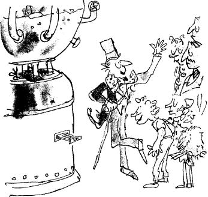

Mr Wonka led the party over to a gigantic machine that stood in the very centre of the Inventing Room. It was a mountain of gleaming metal that towered high above the children and their parents. Out of the very top of it there sprouted hundreds and hundreds of thin glass tubes, and the glass tubes all curled downwards and came together in a bunch and hung suspended over an enormous round tub as big as a bath.
‘Here we go!’ cried Mr Wonka, and he pressed three different buttons on the side of the machine. A second later, a mighty rumbling sound came from inside it, and the whole machine began to shake most frighteningly, and steam began hissing out of it all over, and then suddenly the watchers noticed that runny stuff was pouring down the insides of all the hundreds of little glass tubes and squirting out into the great tub below. And in every single tube the runny stuff was of a different colour, so that all the colours of the rainbow (and many others as well) came sloshing and splashing into the tub. It was a lovely sight. And when the tub was nearly full, Mr Wonka pressed another button, and immediately the runny stuff disappeared, and a whizzing whirring noise took its place; and then a giant whizzer started whizzing round inside the enormous tub, mixing up all the different coloured liquids like an ice-cream soda. Gradually, the mixture began to froth. It became frothier and frothier, and it turned from blue to white to green to brown to yellow, then back to blue again.
‘Watch!’ said Mr Wonka.
Click went the machine, and the whizzer stopped whizzing. And now there came a sort of sucking noise, and very quickly all the blue frothy mixture in the huge basin was sucked back into the stomach of the machine. There was a moment of silence. Then a few queer rumblings were heard. Then silence again. Then suddenly, the machine let out a monstrous mighty groan, and at the same moment a tiny drawer (no bigger than the drawer in a slot machine) popped out of the side of the machine, and in the drawer there lay something so small and thin and grey that everyone thought it must be a mistake. The thing looked like a little strip of grey cardboard.
The children and their parents stared at the little grey strip lying in the drawer.
‘You mean that’s all?’ said Mike Teavee, disgusted.
‘That’s all,’ answered Mr Wonka, gazing proudly at the result. ‘Don’t you know what it is?’
There was a pause. Then suddenly, Violet Beau-regarde, the silly gum-chewing girl, let out a yell of excitement. ‘By gum, it’s gum!’ she shrieked. ‘It’s a stick of chewing-gum!’
‘Right you are!’ cried Mr Wonka, slapping Violet hard on the back. ‘It’s a stick of gum! It’s a stick of the most amazing and fabulous and sensational gum in the world!’
